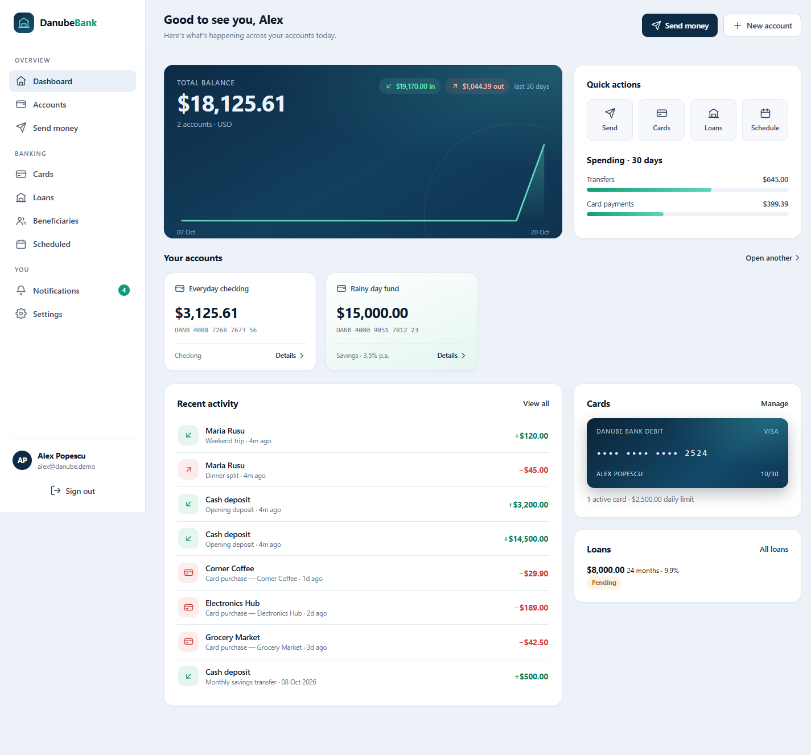
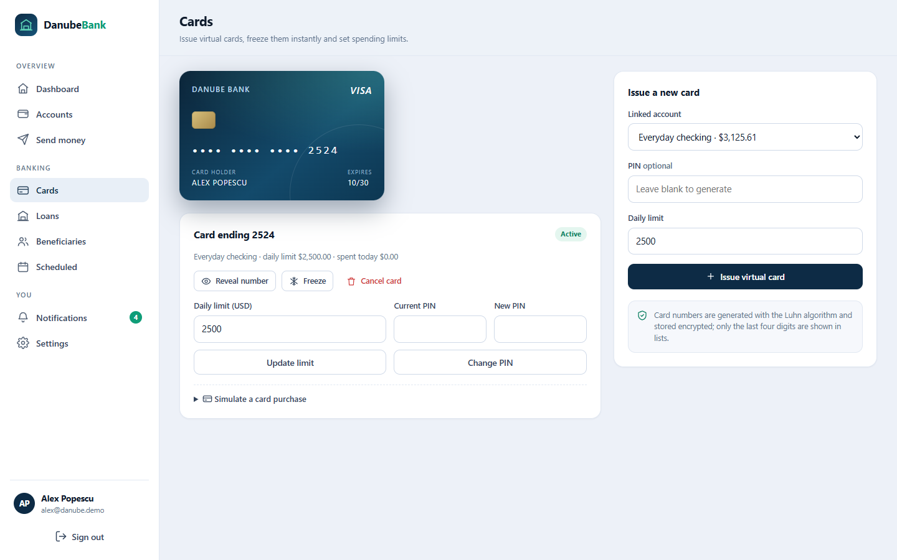
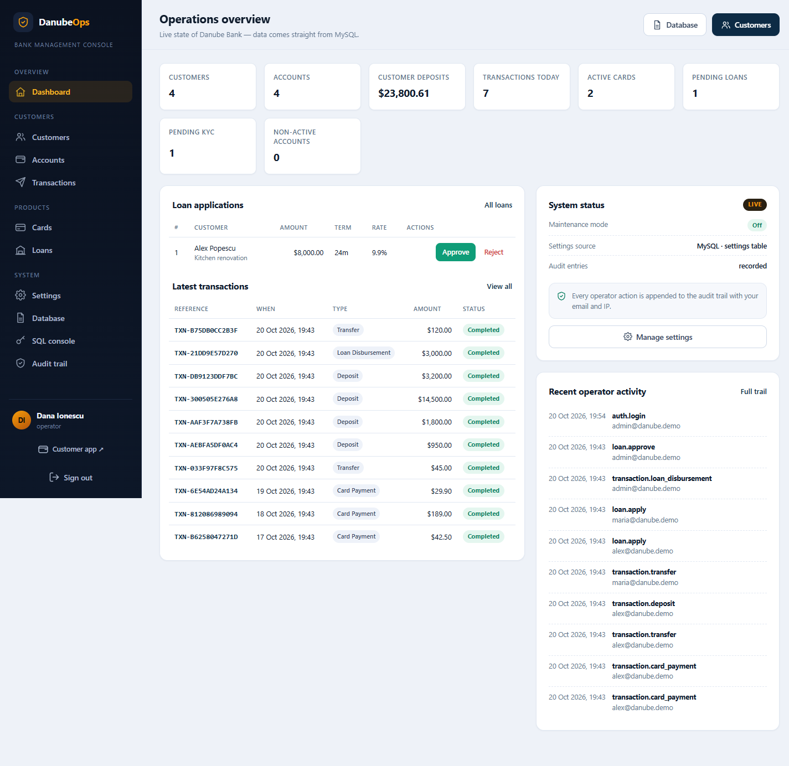
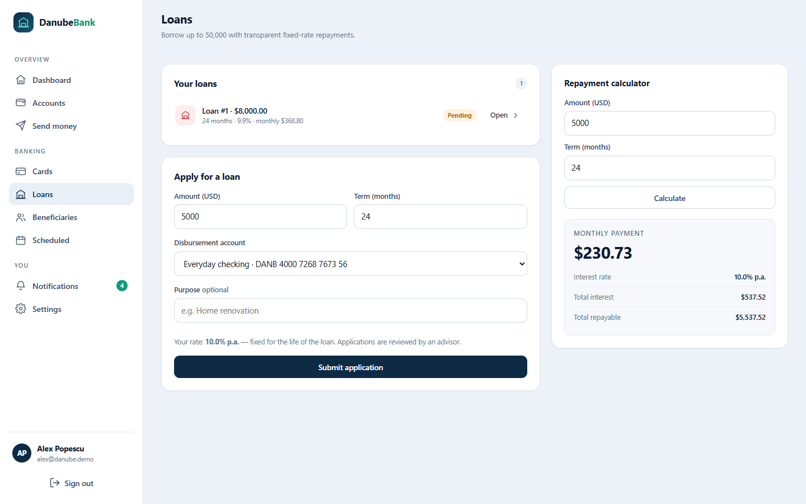
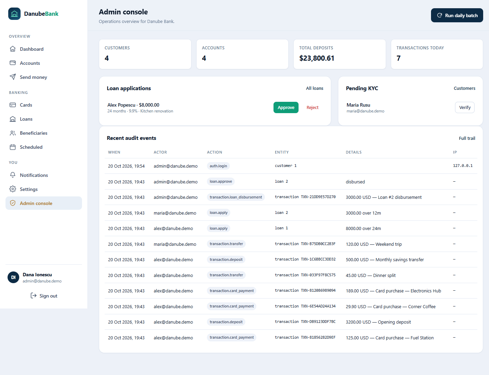

Accounts & balances
Multiple checking and savings accounts per customer, overdraft facilities, savings interest and full statements with CSV export.
A complete banking platform you can run in minutes: customer online banking, a separate operator console, a double-entry ledger, cards, loans, KYC and live database management — all backed by MySQL.

Every button on every page is wired to the database. No placeholder screens, no fake data behind disabled controls — what you see is what the system does.
Multiple checking and savings accounts per customer, overdraft facilities, savings interest and full statements with CSV export.
Instant local transfers, saved beneficiaries, printable receipts and standing orders that run on a real schedule.
Luhn-valid card numbers, encrypted PAN storage, hashed PINs, freeze/cancel, daily limits and simulated purchases.
Rate quotes, applications, operator approval, annuity amortisation schedules, instalment and early repayment.
A separate app on port 8001: customers, KYC, accounts, transactions, card and loan decisions, settings and audit trail.
Browse any table, export CSV, run audited SQL, and download a complete SQL backup — from inside the admin app.
The customer sees a clean banking experience. Operators get the tools to run it.



Balances are never just a number that gets overwritten. Every movement writes a transaction and signed ledger entries with the running balance attached.
SELECT … FOR UPDATE, then funds are checked before anything is written.settings — editable without a redeploy.Both apps share the database and the banking service layer. The operator app never bypasses the ledger for balance changes.
Docker runs MySQL; the seed script creates the schema, settings and demo data.
# 1 · start MySQL docker compose up -d # 2 · python environment python -m venv .venv # Windows: .venv\Scripts\activate # macOS/Linux: source .venv/bin/activate pip install -r requirements.txt # 3 · configuration + schema + demo data cp .env.example .env python -m scripts.seed # 4 · run both apps uvicorn app.main:app --reload # :8000 customers uvicorn admin_app.main:app --port 8001 # :8001 operators
Seeded on first run. Password for all: Password123!
Docker Desktop and Python 3.11+. MySQL 8.4 runs in a container, so nothing else needs to be installed. Works on Windows, macOS and Linux.
Danube Ops is a standalone FastAPI application with its own login, cookie and audit context. It connects to the same MySQL database and the same ledger services.

MIT licensed, self-contained and built to be read. Start with the ledger, then follow the routers — every feature is a few hundred lines.